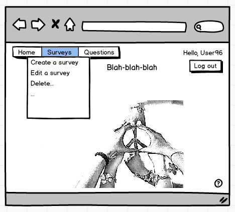
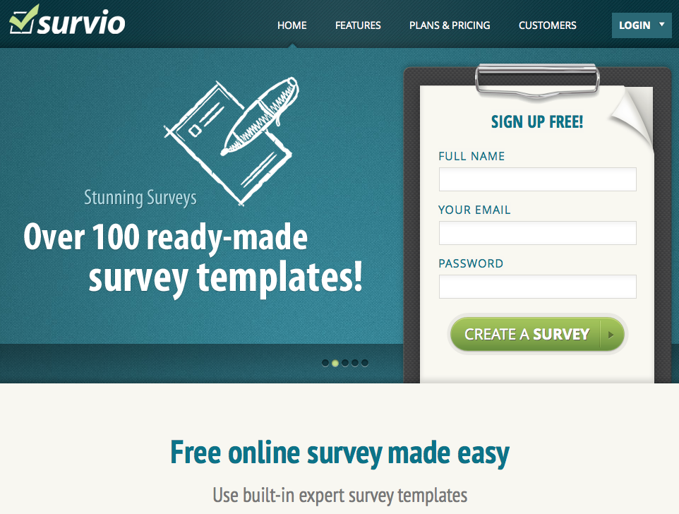
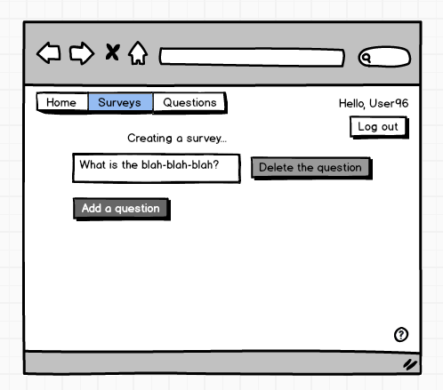
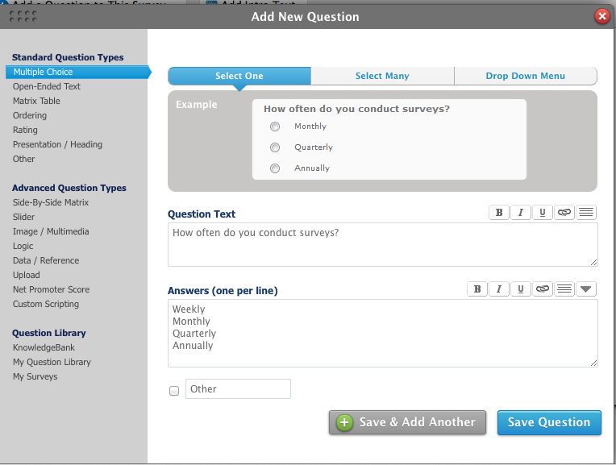
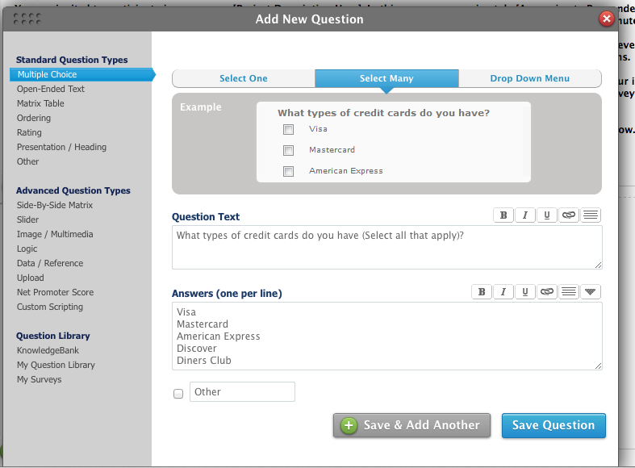

This is an online tool for creating and filling out surveys. It is simple: create a set of questions and let people answer them. Questions can be either text based, or with single/multiple choice. This is an sketch of the home page:
The following image is a screenshot from a similar site:
Here are some possible other pages - we are creating a survey here:
And here is how we would add a single choice question:
And multiple choice question:
